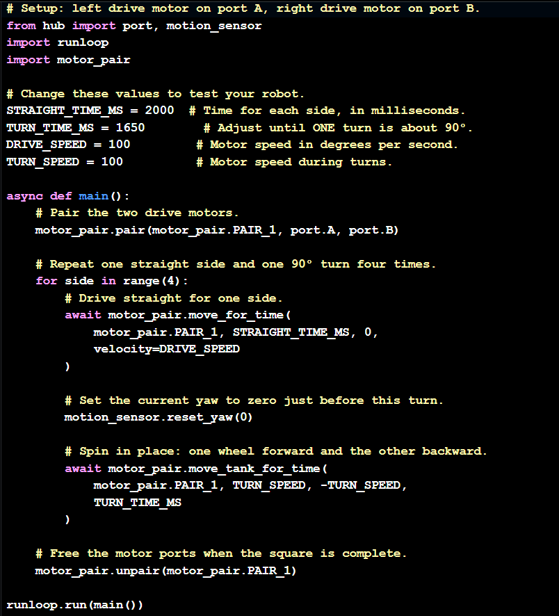

Dr.E challenged us to create a robot that could draw a square using the LEG SPIKE PRIME kit and a handout to show where the square the was allowed to be. To the side I also have a screenshot of my code as well. I liked this project and would definetly would do it again!